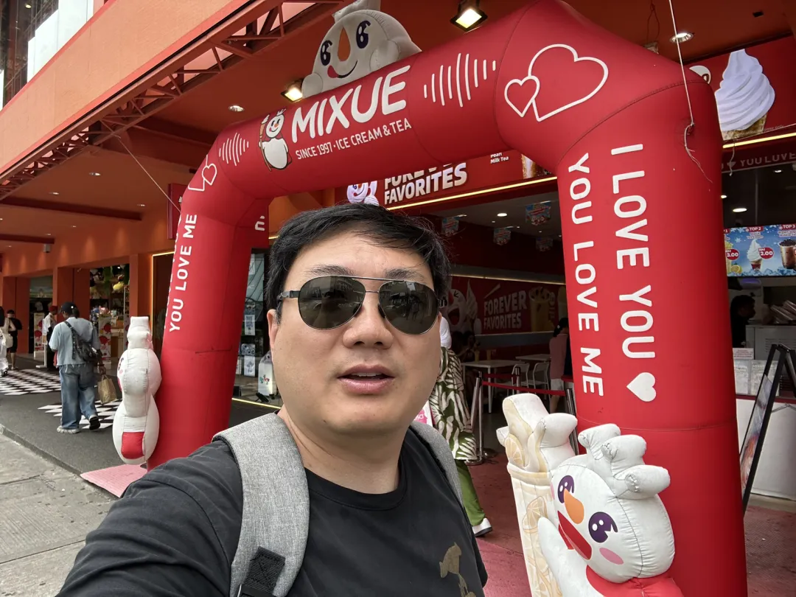
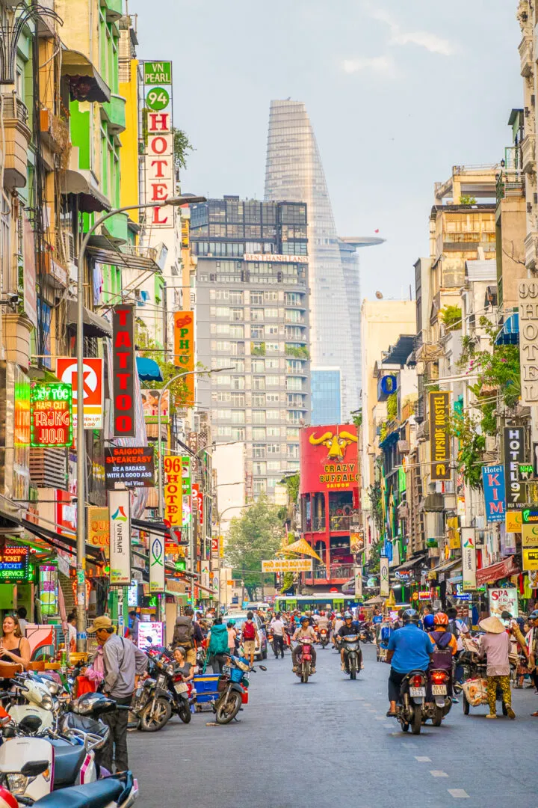
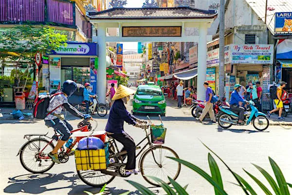
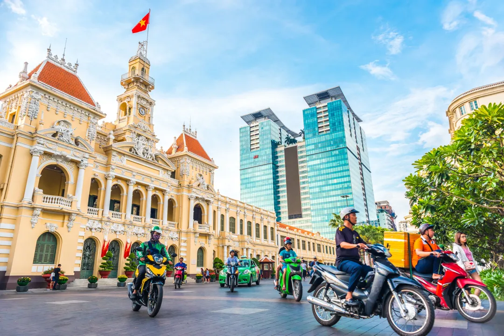
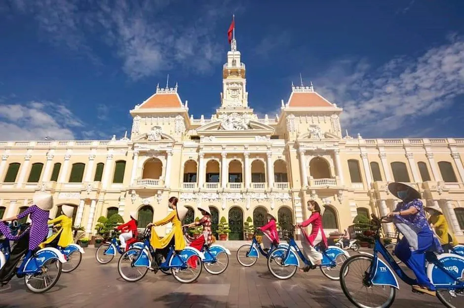

越南胡志明市产业考察｜中国企业全球化实践调研报告
Ho Chi Minh City deep-dive — where China's capabilities meet Vietnam's young, fast-digitizing market.
中国能力全球化 这不仅是能力的全球化，更是能力的深化与优化。
一、胡志明市市场概况：电商与消费的热土
越南是东南亚电商增长最快的市场之一。胡志明市作为经济中心，贡献了全国电商交易的50%以上。
据官方数据，2025年越南电商市场规模预计达到320亿美元，年复合增长率约31.7%。
胡志明市人口约900万，35岁以下年轻群体占50%以上，互联网普及率达75%，为社交电商和数字消费提供了肥沃土壤。
2024年第二季度，胡志明市电商销售额同比增长38%，其中移动端交易占70%。

胡志明市的消费场景呈现线上线下融合趋势，社交电商平台如TikTokShop快速崛起，2024年第一季度市场份额达23.2%。
消费者偏好高性价比、个性化的产品，尤其在春节等节日，消费热情可推高销售额2—3倍。
越南政府积极推动数字经济发展，通过税收优惠和物流基建优化，为企业进入市场创造了有利条件。
二、机会点：年轻化消费者与节日经济红利
胡志明市市场的核心机会在于年轻化消费群体和节日经济。
官方统计显示，25—34岁人群是消费主力，占胡志明市网购用户的40%，他们热衷通过短视频和直播发现产品。
2024年，70%的胡志明市消费者通过社交平台搜索商品，45%在观看短视频后直接下单，转化率在促销节点如9.9购物节可提升至65%。

节日经济是重要切入点。2025年春节期间，胡志明市家居、美妆和电子产品销量预计增长2.5倍。
企业可通过本地化内容营销，如融入越南传统文化元素的短视频，或与本地网红合作，提升品牌吸引力。
此外，女性消费者在家居和美妆品类的支出占60%，偏好场景化展示，为精准营销提供了方向。
三、跨境电商：本地化运营与供应链优势
胡志明市是越南跨境电商的核心枢纽，2025年跨境交易额预计占电商市场的30%。
得益于胡志明市靠近中国供应链和完善的港口物流，跨境包裹量占全国60%。
平台数据显示，Shopee、TikTokShop和Lazada是胡志明市三大主流电商平台，其中Shopee月访问量达1.7亿次，TikTokShop以直播带货快速增长，2024年第一季度市场份额超Lazada。

本地化是跨境电商成功的关键。胡志明市消费者偏好融入越南文化的商品，如带有传统图案的家居用品。
企业需优化供应链：跨境直邮适合新品测试，稳定订单后可转为海外仓，缩短配送时间至3—5天，提升复购率。
越南政府2024年8月出台的第29号指示，鼓励平台增加本地商品销售，同时加强对跨境商品监管，促使企业更注重本地化运营。
四、制造业与科技出海：成本优势与本地融合
胡志明市是越南制造业的核心区域，吸引了众多中国企业投资建厂。
官方数据显示，2024年前五个月，胡志明市及周边巴地头顿省吸引外商直接投资超20亿美元，家电和电子制造占30%。
越南对整车进口征收45%关税，而零部件进口税率仅13%—15%，本地生产可显著降低成本。
此外，胡志明市靠近中国供应链，物流成本较墨西哥低20%—30%，对美出口关税仅3.9%，远低于中国的11.4%。

中国企业在胡志明市的科技出海注重本地化融合。
例如，家电制造企业通过派遣越籍员工到中国培训，同时派中国技术团队指导本地生产，确保产品质量与国内一致。
胡志明市工人执行力强，但技术人才短缺，企业需从基础培训开始，逐步提升技能。
语言沟通是关键，鼓励本地员工学中文，中国团队学越语，减少文化隔阂，构建知识互动平台。
五、本地消费趋势：场景化与服务升级
胡志明市消费者越来越倾向于场景化、沉浸式购物体验。2024年，65%的网购用户表示，短视频和直播内容直接影响购买决策。
家居用品在胡志明市电商平台中占GMV的20%，消费者偏好实用性和个性化设计，如收纳用品和小型家电。
春节期间，家居品类销量可增长2—3倍，商家需提前45天备货，结合本地网红营销放大声量。

服务质量对胡志明市消费者至关重要。受法式文化影响，消费者对售后服务要求高，平台数据显示，30天免费退货政策可提升订单转化率80%。
此外，胡志明市消费者对高品质产品的接受度高，愿意为品牌溢价支付10%—15%的溢价，促使企业注重本地化服务和品质保障。
结语：中国能力与本地化的双重奏
胡志明市市场的快速增长，为中国企业的跨境电商、制造业和科技出海提供了广阔机遇。
从年轻化的消费群体到节日经济红利，从本地化运营到供应链优化，中国企业需将成熟能力与越南市场深度融合。
这不仅是能力的全球化，更是能力的深化与优化。我相信，随着更多企业扎根胡志明市，中国将在全球舞台上书写更多成功故事。
本文内容整理自海鑫汇海外考察记录，首发于海鑫汇官方公众号（2025年10月）。 查看公众号原文 →